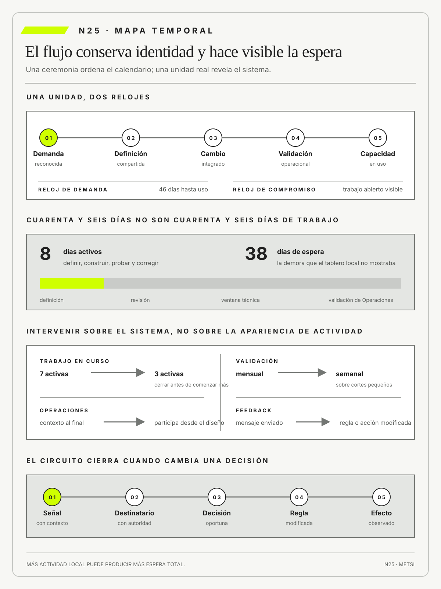

Fernando Flores
Creando organizaciones para el futuroDolmen · 1997
Vincula lenguaje, compromisos y tecnología para observar cómo una organización promete, coordina y repara acciones.

La velocidad local no demuestra que el sistema de cambio produzca un mejor resultado de servicio.
Flujo más allá de las ceremonias: colas, lote, espera y feedback
Ruta priorizada: 1 h 20 min a 1 h 40 min. Núcleo de lectura: 60 a 75 min; preparación: 20 a 25 min. Las extensiones agregan 30 a 45 min y profundizan el recorrido.

Nota. SIN NUM. identifica aparatos de orientación y referencia.
Seis referentes y las obras principales utilizadas para construir N25.
Vincula lenguaje, compromisos y tecnología para observar cómo una organización promete, coordina y repara acciones.

Une reflexión, diálogo y acción situada para que las personas afectadas participen en la comprensión y transformación del problema.

Convierte límites, políticas explícitas y gestión evolutiva en una práctica observable de flujo.

Desarrolló minería de procesos para reconstruir flujos reales desde registros de eventos.

Conecta operación distribuida, consistencia y recuperación con compromisos de servicio explícitos.

Vinculó lotes pequeños, pruebas y retroalimentación frecuente en desarrollo de software.
N25 no resume estas fuentes ni las convierte en receta. Las pone en tensión para construir juicio profesional.
¿Cómo mejorar un sistema de trabajo cuando todas las ceremonias ocurren y, sin embargo, las decisiones y el valor siguen esperando?

El flujo conserva identidad desde la demanda hasta una capacidad en uso y contrasta sus efectos sobre el servicio.
Un banco trabaja en sprints de dos semanas. Las reuniones comienzan a horario, el tablero se actualiza y la velocidad permanece estable. Una corrección sobre la recuperación de acceso tarda ciento dieciocho días desde el primer reclamo hasta su uso por todas las personas. El calendario del equipo es breve; la experiencia de quien espera, larga.
La mayor parte del tiempo no contiene trabajo activo. El pedido espera clasificación, análisis espera datos, desarrollo espera una decisión, la prueba espera ambiente y la liberación espera comité. Atención resuelve manualmente sin reabrir la tarea. Cada área parece ocupada y cada tablero local muestra avance. El sistema completo acumula colas invisibles.
La velocidad estable tampoco demuestra previsibilidad. Puede significar que el equipo completa una cantidad semejante de tareas mientras la demanda espera fuera de su frontera. Si el reloj comienza cuando desarrollo acepta el pedido, desaparecen semanas anteriores. Si termina al desplegar, desaparecen validación, adopción y reparación. Cambiar los límites de medición mejora el indicador sin modificar el servicio.
Flujo describe el movimiento de una unidad con identidad desde demanda hasta resultado y feedback. La corrección puede dividirse en tareas y atravesar responsables, pero debe conservar el vínculo con el episodio original. Para comprenderla se observan trabajo en curso, edad, espera, lote, handoffs, bloqueos, retrabajo y capacidad de reparación. Las ceremonias pueden crear cadencia; no garantizan movimiento.
La espera no es homogénea. Una revisión de seguridad puede proteger; una aprobación duplicada puede responder sólo a historia; una cola puede revelar falta de capacidad o una política que privilegia trabajo nuevo. Reducir todo tiempo de espera puede eliminar controles o empujar más trabajo hacia una restricción. La mejora exige explicar qué función cumple cada pausa y quién soporta su costo.
El equipo limita iniciativas activas, reduce lotes, acerca prueba y operación, define políticas explícitas de entrada y mide tiempo de punta a punta. Kanban ayuda a visualizar inventario y límites; Scrum puede ordenar ciclos de inspección; ninguno reemplaza la decisión sobre unidad, propósito y consecuencia. La velocidad local disminuye mientras el tiempo total y el retrabajo mejoran.
También se revisa la utilización. Mantener a cada persona ocupada maximiza colas cuando existe variabilidad y trabajo no planificado. El sistema necesita margen para excepciones, aprendizaje y reparación. Una capacidad ociosa aparente puede ser la condición para responder a un incidente sin detener todo el flujo. La eficiencia profesional se evalúa sobre el resultado completo y las condiciones de trabajo, no sobre actividad continua.
El feedback cierra el recorrido sólo cuando modifica una política, una prioridad o un diseño. Registrar satisfacción después de la liberación no alcanza si esa información no vuelve al punto donde se decide. El equipo vincula incidentes, uso, espera y resultado con la demanda original, y observa si el cambio redujo realmente la necesidad o sólo aceleró su paso hasta la siguiente cola.
N25 cierra el Bloque E. Recibe una cartera priorizada y la convierte en un sistema de trabajo observable. Optimizar flujo no significa acelerar todo, sino diseñar movimiento sostenible, hacer visibles colas y elegir dónde la espera protege, dónde destruye valor y qué feedback debe regresar para que el siguiente cambio no repita la misma demora.
HH-24 limitó la cartera a cobertura accesible e instrumentación de eventos. En HH-25, el tablero muestra avance semanal, pero una modificación de la instrumentación tarda cuarenta y seis días desde la necesidad hasta el uso. Esa modificación es la unidad de cambio que atraviesa el sistema de trabajo.

Los episodios de llegada y reasignación siguen siendo la unidad operacional definida en N14 y permiten verificar si el cambio mejora o deteriora el servicio. No se trata de la corrección de cobertura accesible que en la apertura acumuló ciento dieciocho días, sino de la segunda apuesta activa de HH-24.
Federico Müller mide ocho días de trabajo activo; el resto transcurre en espera de definición, revisión, ventana técnica y validación de Operaciones.
Lucía Ferreyra reconstruye el recorrido de la modificación desde el episodio que originó la necesidad hasta su uso en todos los turnos y encuentra cuatro colas invisibles. Los episodios de reasignación se conservan como evidencia del resultado y no se cuentan como si fueran tareas del cambio. Mariela Benítez valida cambios en lotes mensuales porque no conoce qué versión rige en cada piso.
Camila Duarte introduce urgencias que desplazan obligaciones sin registrar el costo. Ricardo Sosa redefine inicio y salida, limita trabajo en curso y hace visible edad, bloqueos y handoffs.
El equipo reduce el lote de reglas, reserva capacidad para incidentes y accesibilidad, y establece feedback diario entre Recepción y Housekeeping. La Ley de Little se usa con fronteras y unidades estables para interpretar la relación entre trabajo abierto, throughput y tiempo de flujo, no para prometer una velocidad automática. Los promedios se acompañan con percentiles y episodios extremos.
La reconstrucción sigue veinte unidades de cambio y encuentra cuatro definiciones de inicio. Comercial comienza cuando aprueba una solicitud; Producto, cuando la incorpora a su lista; Tecnología, cuando inicia desarrollo; Operaciones, cuando recibe una versión para validar. El equipo adopta la primera demanda reconocida como inicio común y conserva los hitos intermedios. El tiempo no aumenta por cambiar la medición, pero aparece una espera que antes no tenía responsable.
La cola más larga no está en desarrollo. Las correcciones esperan una ventana mensual porque las pruebas se preparan en lote y Operaciones sólo recibe contexto al final. Federico propone ampliar ambientes; Lucía observa que el problema principal es la transferencia tardía de información. El equipo prueba una validación semanal sobre cortes pequeños y participa a Operaciones desde el diseño. La intervención combina capacidad y política, no compra infraestructura por reflejo.
El límite de trabajo en curso reduce de siete a tres las correcciones activas. Durante la primera semana parece caer la productividad porque menos tareas comienzan. En la tercera, aumenta la cantidad que alcanza salida y disminuye la edad de los casos. El cambio confirma una relación sistémica: liberar atención y cerrar unidades puede mejorar el resultado aunque cada especialista mantenga momentos sin una tarea asignada.
Una urgencia comercial prueba la política. Antes, el pedido habría ingresado sin desplazar nada visible. Ahora Camila debe identificar qué unidad se pausa, qué costo de demora asume y cuándo recuperará prioridad. La organización decide no interrumpir la corrección accesible y utiliza parte de la reserva de capacidad definida en HH-24. La prioridad se convierte en comportamiento de flujo y no queda sólo en el expediente.
El feedback diario revela que Housekeeping interpreta de manera distinta dos tipos de bloqueo. La corrección se incorpora al lote siguiente antes de expandir el cambio. Sin ese circuito, la señal habría quedado en un chat y reaparecido como incidente. El mapa registra destinatario, tiempo hasta decisión y cambio realizado. La retroalimentación se considera cerrada cuando modifica una regla o una acción, no cuando el mensaje fue enviado.
La decisión se revisa si disminuir trabajo en curso aumenta abandono, traslada espera al huésped o elimina un control protector. Como cierre, HH-25 entrega a HH-26 un mapa temporal de unidades de cambio con colas, políticas, responsables y rutas de reparación, junto con los episodios operacionales que permiten evaluar sus consecuencias. El próximo núcleo podrá ampliar la arquitectura hacia servicios, plataformas y terceros sin confundir flujo de cambio con flujo del huésped.
Un sistema de cambio fluye cuando cada unidad conserva su identidad desde la demanda reconocida hasta una capacidad en uso. Sus efectos deben comprobarse sobre el resultado de servicio que se quería modificar. El flujo falla cuando la velocidad local o las ceremonias ocultan colas, trabajo abierto y esperas trasladadas a otras áreas o al huésped. Por eso hay que gobernar fronteras, trabajo en curso, lotes, feedback y reparación. La unidad de cambio de N25 no es lo mismo que el episodio operacional estudiado en N14.
La tesis se vuelve operativa al observar llegada, espera, trabajo en curso, terminación y retorno de información para entender el flujo real más allá de reuniones y tableros. Esa secuencia obliga a declarar qué cambia, qué permanece abierto y qué evidencia podría modificar la decisión. El rigor no proviene de agregar términos, sino de hacer reconstruible el paso entre una observación, una explicación y una acción.
Un ejemplo sencillo permite verlo: iniciar diez casos aumenta sensación de actividad pero alarga cada entrega; limitar WIP permite terminar, aprender y liberar capacidad. El caso muestra por qué una misma señal admite explicaciones e intervenciones diferentes. Antes de ampliar alcance conviene precisar población, condición de éxito y fuente de evidencia.
El límite también importa: copiar ceremonias de Scrum o columnas de Kanban sin políticas explícitas, criterios de terminado ni respuesta a bloqueos. Ese contraejemplo evita convertir una idea útil en receta universal. Una decisión puede ser provisional, pero debe decir qué protege ahora y cuándo volverá a examinarse.
En Hotel Horizonte, reservas, habitaciones y reparaciones fluyen con relojes distintos; un límite visible evita prometer más llegadas de las que pueden completarse. El caso longitudinal obliga a sostener la misma promesa mientras cambian el modelo y la evidencia; así puede verse qué aprendió realmente el equipo.
La consecuencia profesional es gestionar identidad y espera de cada caso; N26 ampliará el flujo hacia servicios, plataformas y terceros. La tesis no cierra la discusión: fija un criterio común para que el encuentro pueda comparar argumentos, producir evidencia y decidir sin ocultar incertidumbre.
El sistema de cambio sólo puede mejorar cuando sigue una unidad estable desde la demanda hasta la capacidad en uso, hace visibles sus colas y cierra el feedback con una decisión modificada.

N24 entrega una cartera limitada por capacidad, con dos apuestas activas, renuncias explícitas y fechas de revisión. N25 observa cómo ese trabajo cruza colas, lotes, transferencias y reparaciones para distinguir avance real de actividad local.
N26 abrirá el Bloque F y ampliará la arquitectura hacia un ecosistema de servicios, plataformas y terceros. N25 entrega un flujo gobernado sin diseñar todavía esa arquitectura.
N25 integra teoría de colas, física de fábricas, lean, kanban, DevOps y gestión de servicios. La bibliografía permite explicar relaciones entre trabajo abierto, variabilidad, lote, espera y feedback; ninguna fuente autoriza a optimizar velocidad local a costa de estabilidad, reparación o personas.
Little, J. D. C. formaliza una relación que N25 usa bajo fronteras estables para interpretar trabajo de cambio abierto, tasa de salida y tiempo, sin convertirla en promesa de velocidad.
Hopp, W. J. y Spearman, M. L. explican variabilidad, colas y comportamiento operacional.
Reinertsen, D. G. conecta colas y tamaño de lote con el tiempo que una modificación tarda en producir evidencia sobre su efecto.
Ohno, T. fundamenta flujo, trabajo visible y aprendizaje en operación.
Anderson, D. J. aporta límites de trabajo en curso y políticas de entrada que impiden acelerar una etapa a costa de ocultar inventario antes o después de ella.
Forsgren, N., Humble, J. y Kim, G. relacionan flujo de entrega, estabilidad y aprendizaje organizacional mediante evidencia empírica.
Kim, G., Humble, J., Debois, P. y Willis, J. integran entrega, operación, feedback y mejora continua.
Kanban Guides exige definir la unidad, los puntos de inicio y salida y las políticas que hacen comparable el flujo de cambios a través de equipos.
DeBellis, D. et al., mediante el informe DORA 2024, aportan evidencia reciente sobre lote, estabilidad, experiencia de desarrollo y flujo de entrega.
DeBellis, D. et al., mediante el informe DORA 2025, examinan la inteligencia artificial como amplificador del sistema de trabajo, no como atajo independiente de sus colas y controles.
Project Management Institute vincula medición del desempeño con entrega de valor y adaptación del sistema de trabajo.
ISO/IEC permite contrastar la mejora del flujo de cambio con controles, responsabilidades y continuidad que el servicio debe conservar durante la intervención.
Box, G. E. P. y Draper, N. R. aportan una cautela para interpretar medidas de flujo: todo modelo simplifica una realidad y su utilidad depende de fronteras, supuestos y propósito. van der Aalst, W. M. P. muestra cómo los registros de eventos permiten reconstruir procesos reales y compararlos con modelos declarados, siempre que existan identificadores y semántica suficiente.
Fowler, M. y Beck, K. vinculan cambios pequeños, integración frecuente, pruebas y diseño evolutivo. Su aporte no se reduce a acelerar desarrollo. Permite acortar la distancia entre una decisión y la evidencia sobre su efecto. Scarfone, K., Souppaya, M., Cody, A. y Orebaugh, A. incorporan pruebas y controles de seguridad dentro del flujo, de modo que protección no se transforme en una puerta tardía. Davenport, T. H. aporta una mirada de proceso que atraviesa funciones y conecta información con rediseño organizacional.
Vogels, W. sitúa consistencia, disponibilidad y recuperación dentro de la operación de servicios distribuidos. Edmondson, A. C. muestra que la visibilidad del flujo no produce aprendizaje si las personas no pueden declarar bloqueos, errores y señales débiles sin quedar expuestas a una sanción defensiva.
Las tradiciones contienen tensiones. Lean busca reducir inventario y desperdicio, pero un servicio puede necesitar reservas y esperas protectoras. Kanban hace visibles políticas y trabajo abierto, pero un tablero puede reproducir fronteras locales si no sigue una unidad de valor. DevOps acorta entrega y retroalimentación, pero la frecuencia técnica no garantiza resultado. La gestión de servicios protege estabilidad y puede agregar aprobaciones que pierden su función original. N25 utiliza estas tensiones para evitar una receta de velocidad.
La evidencia reciente sobre inteligencia artificial exige otra precaución. Una herramienta puede reducir tiempo activo de programación y aumentar el volumen de cambios que llega a revisión. Si la capacidad siguiente no crece, la cola se desplaza y el tiempo total puede empeorar. El informe DORA de 2025 interpreta la asistencia como amplificador del sistema. N25 aplica esa idea al flujo completo y pregunta dónde aparece el nuevo inventario, qué verificación requiere y quién repara errores.
El primer movimiento define la mirada. La organización suele representar procesos mediante funciones y actividades ideales. El flujo real se reconstruye desde unidades concretas, con sus esperas, devoluciones y excepciones. Esta diferencia permite descubrir que una etapa que parece eficiente produce información que la siguiente no puede usar, o que una aprobación se repite porque el contexto se perdió durante la transferencia.
La unidad de cambio necesita una frontera estable para comparar y una identidad que sobreviva a los sistemas. En Hotel Horizonte, la solicitud de corrección recibe un identificador que vincula el episodio que la originó, la regla modificada, las tareas, la validación y los incidentes posteriores. El episodio del huésped conserva su propia identidad operacional. No se utiliza información personal innecesaria. La trazabilidad busca reconstruir decisiones y tiempos, no vigilar productividad individual.
Inicio y salida se definen desde quien espera el resultado. Esto no significa ignorar hitos internos. Se conservan porque ayudan a localizar colas. Lo que se evita es declarar salida cuando una parte transfiere trabajo y la necesidad todavía no está resuelta. Un despliegue puede ser un hito importante y no constituir el final del flujo.
El mapa combina tiempos con narrativas de episodios. La distribución identifica patrones y extremos; la reconstrucción cualitativa explica mecanismos. Diez casos con una espera semejante pueden depender de causas distintas. La intervención se diseña sobre la relación entre evidencia y no a partir de una cifra aislada.
En simple: Flujo de valor es el movimiento de una necesidad hasta una capacidad usada, observada y reparable. Su frontera sigue la perspectiva de quien espera el resultado y no la estructura del organigrama.
Registrar unidades reales revela espera, retrabajo y decisiones que un proceso ideal omite. El outcome permite distinguir flujo de mera velocidad de producción.
Ejemplo cercano: En Hotel Horizonte, el flujo operacional de N14 comienza con una necesidad de alojamiento y termina con una habitación entregada bajo la promesa acordada. El flujo de cambio de N25 comienza cuando un episodio vuelve reconocible una necesidad de modificación y termina cuando la capacidad corregida está en uso, puede observarse y admite reparación.
La misma unidad puede contener ciclos internos. Una discrepancia vuelve a Housekeeping, la asignación se corrige y la comunicación se repite. El flujo no reinicia para mejorar la métrica. Conserva las devoluciones dentro del episodio y registra cuándo una corrección genera retrabajo.
La condición de salida incluye reparación. Si la persona recibe una habitación después de una falla, el caso puede cerrar operacionalmente y conservar un daño pendiente. El mapa distingue restauración de la capacidad y atención de la consecuencia.
En simple, con un ejemplo: Trabajo en curso reúne unidades iniciadas que todavía no alcanzaron su condición de salida. Incluye casos bloqueados, devueltos e invisibles fuera del tablero de un equipo.
Más trabajo abierto consume atención, amplía colas y demora feedback. El límite debe observarse de punta a punta para no trasladar inventario entre áreas.
HH-25 cuenta unidades de cambio comprometidas e incompletas, no sólo tareas técnicas activas, y registra quién espera por cada una. Los episodios operacionales se cuentan aparte para evaluar el outcome y detectar daño o retrabajo.
El inventario incluye trabajo bloqueado, pendiente de información y reabierto. Una unidad no desaparece porque el equipo no pueda actuar. Ese criterio impide mejorar el indicador trasladando tarjetas a una columna externa o devolviendo solicitudes incompletas sin resolver la necesidad.
La edad del trabajo en curso aporta una señal anticipada. Antes de que aumente el tiempo promedio de salida, algunos casos envejecen y muestran riesgo de demora extrema. Una política de revisión por edad puede recuperar unidades olvidadas sin transformar toda demanda antigua en urgencia.
En simple, con un ejemplo: Una cola es demanda que espera capacidad o una decisión antes de avanzar. Puede ser visible en una bandeja o permanecer oculta en correos, consultas y memoria de una persona.
Su comportamiento depende de llegadas, variabilidad, prioridades y recurso disponible. Acelerar una etapa no ayuda si aumenta la llegada o desplaza el cuello hacia otra cola.
El mapa del hotel identifica qué casos esperan información, autorización o reparación y qué política decide el orden.
Las colas pueden formarse antes de un recurso o de una decisión. Una validación mensual crea un lote temporal; un permiso central crea espera por autoridad; una especificación incompleta produce devoluciones. Contar unidades muestra tamaño. Reconstruir el mecanismo muestra qué intervención podría cambiarlo.
Una cola también puede proteger. Limitar cambios durante un pico reduce riesgo operacional. La política debe declarar esa función, la capacidad disponible y el costo de esperar. Sin esa evidencia, protección puede volverse una justificación permanente.
En simple: Tiempo de flujo es el lapso desde que una unidad entra al sistema hasta que alcanza salida. Incluye trabajo activo, espera, devoluciones y pausas protectoras.
La frontera y la unidad deben permanecer estables para comparar. Promedios se acompañan con distribución y segmentos porque algunos casos pueden esperar mucho más.
Ejemplo cercano: HH-25 distingue cuánto tiempo se trabaja sobre una llegada y cuánto permanece sin avanzar entre Recepción, Housekeeping y Tecnología.
La distribución importa más que un promedio único. La mediana puede bajar mientras algunos casos críticos esperan mucho más. Percentiles, edad y segmentación por tipo de demanda permiten detectar poblaciones que la mejora general no alcanza.
El reloj debe usar la perspectiva correcta. Horas hábiles pueden servir para una tarea interna y ocultar que el huésped espera durante la noche. Tiempo calendario y tiempo de servicio responden preguntas distintas; el mapa conserva ambos cuando la promesa los necesita.
También se distinguen dos inicios. El tiempo desde la demanda comienza cuando una necesidad reconocible entra al sistema, aunque todavía no se haya aceptado trabajar sobre ella. El tiempo desde el compromiso comienza cuando la opción atraviesa una política explícita de entrada y consume capacidad. Anderson (2010) y la Guía Kanban (Kanban Guides, 2025) exigen definir el flujo y sus puntos de comienzo y final.
HH-25 informa ambos relojes: el primero muestra la espera que soporta quien demanda; el segundo permite gobernar trabajo en curso sin esconder una cola previa.
Una solicitud descartada antes del compromiso no integra el trabajo en curso, pero sí forma parte de la demanda y necesita una decisión trazable. Si Producto mueve el punto de entrada para mejorar el indicador, el tiempo desde la demanda revela el traslado. Esta distinción evita discutir si todo pedido es trabajo activo y permite observar, a la vez, capacidad interna y experiencia total.
En simple: La Guía Kanban distingue cuatro métricas mínimas de flujo: trabajo en curso, throughput, edad de los elementos y tiempo de ciclo. Cada una observa una relación diferente. El trabajo en curso muestra cuántas unidades están activas. El throughput cuenta cuántas alcanzan salida en un período. La edad advierte cuánto lleva abierto cada elemento todavía inconcluso. El tiempo de ciclo mide cuánto demoraron las unidades que salieron desde el punto de inicio acordado. Ninguna cifra explica por sí sola el mecanismo ni la experiencia completa.
Ejemplo cercano: Las métricas necesitan una misma unidad y una frontera estable. Mezclar incidentes pequeños, proyectos extensos y consultas simples produce un promedio sin significado operativo. HH-25 sigue episodios de llegada que requieren coordinación entre áreas y conserva segmentos por canal, turno, accesibilidad y tipo de excepción. Si cambia el punto de comienzo, mantiene ambas series durante la transición. Así puede distinguir una mejora real de una modificación de medición.
La edad complementa el análisis de elementos terminados. Un tiempo de ciclo histórico favorable puede coexistir con casos actuales que envejecen sin avanzar. La revisión observa cuáles exceden una expectativa de nivel de servicio y qué condición los retiene. Esa expectativa no constituye una promesa individual ni una fecha garantizada; expresa una previsión probabilística basada en el flujo observado. Un caso severo puede requerir otra política aunque su clase sea infrecuente.
Scrum introduce una cadencia distinta. El Sprint contiene los demás eventos y crea una ventana estable para perseguir un Objetivo del Sprint, inspeccionar un Incremento y adaptar el plan. Su duración no convierte automáticamente al sprint en unidad válida de medición del flujo. Una solicitud puede esperar antes de entrar, atravesar varios sprints o llegar a operación mucho después de la revisión.
Medir velocidad o cantidad de puntos por sprint describe una convención interna y no el tiempo que una capacidad demora en alcanzar a quien la necesita.
Sprint y flujo pueden observarse juntos sin fusionarse. La cadencia de Scrum protege foco y genera oportunidades regulares de inspección. Las métricas de flujo revelan variabilidad y espera dentro y fuera de esa ventana. En Hotel Horizonte, el equipo mantiene sprints de dos semanas para orientar el incremento y revisa semanalmente edad, bloqueos y tiempo desde la demanda. Si un episodio envejece durante tres sprints, la estabilidad de la velocidad no corrige la demora. La conversación debe volver a dependencias, políticas y capacidad.
Las cadencias responden a decisiones diferentes. Puede existir una revisión diaria de bloqueos, una revisión semanal del flujo, una revisión de sprint del producto, una revisión mensual de servicio y una revisión trimestral de cartera. Acumular reuniones no mejora el sistema. Cada cadencia necesita una pregunta, una evidencia y una autoridad. Si dos reuniones producen la misma decisión, se combinan; si una señal urgente espera la reunión mensual, se define un disparador por evento.
DORA agrega otra frontera. Sus cinco métricas actuales observan desempeño de entrega de software por aplicación o servicio: tiempo de entrega del cambio, frecuencia de despliegue, tiempo de recuperación ante despliegue fallido, tasa de fallas de cambio y tasa de retrabajo de despliegue. Son pertinentes cuando una parte relevante del flujo es software y se interpretan en contexto.
No reemplazan tiempo desde la demanda, experiencia de la huésped ni reparación operacional. N30 desarrollará su uso; N25 las ubica como evidencia de un tramo técnico dentro de una trayectoria mayor.
La comprobación combina señales antes de intervenir. Reducir trabajo en curso debería disminuir edad y tiempo sin deteriorar resultado, estabilidad o condiciones laborales. Aumentar throughput puede ser favorable si no proviene de unidades más pequeñas sin valor o de trabajo trasladado. Una frecuencia de despliegue mayor puede acortar feedback y también saturar revisión. HH-25 acepta la mejora sólo cuando la misma población recibe antes una capacidad utilizable y la organización conserva posibilidad de detectar, detener y reparar.
El segundo movimiento interviene sobre relaciones que producen demora. Reducir trabajo abierto libera atención y acelera cierre. Reducir lote acorta el tiempo hasta integrar y recibir evidencia. Modificar políticas de cola cambia qué avanza y qué espera. Ninguna palanca funciona de manera aislada: un lote menor puede aumentar transferencias y una restricción de entrada puede trasladar demanda fuera del tablero.


La intervención se prueba con una frontera de punta a punta. Si desarrollo reduce su lote y Operaciones conserva una validación mensual, las unidades se acumulan en la cola siguiente. Si se limita trabajo dentro de un equipo y los pedidos pendientes quedan en correos, el inventario desaparece de la medida y no del sistema. HH-25 verifica demanda, trabajo abierto y salida en toda la trayectoria.
La Ley de Little ofrece una relación potente y limitada (Little, 1961). En un sistema suficientemente estable, el trabajo promedio en curso equivale a la tasa de salida multiplicada por el tiempo promedio. No determina causalidad ni predice un caso. Ayuda a detectar incoherencias, estimar efectos de mantener inventario y discutir por qué comenzar más con una salida semejante aumenta espera.
La reducción debe considerar condiciones laborales. Un flujo que mejora porque exige interrupción constante, disponibilidad fuera de horario o intensificación invisible no es sostenible. La capacidad incluye concentración, aprendizaje y recuperación. El resultado profesional combina tiempo, calidad, outcome y posibilidad de sostener el trabajo.
En simple: La Ley de Little relaciona trabajo en curso, throughput y tiempo medio en un sistema estable. Es una identidad sobre promedios de la misma frontera y unidad, no una predicción de cada caso.
Aplicarla exige observar un período representativo y contabilizar entradas y salidas consistentemente. Si el sistema cambia o mezcla poblaciones, el resultado necesita interpretación y segmentación.
Ejemplo cercano: La relación muestra por qué sostener más trabajo abierto con throughput semejante alarga el tiempo, aun cuando todas las personas parezcan ocupadas.
La estabilidad se evalúa, no se supone. Entradas y salidas pueden variar por temporada; las unidades pueden tener tamaños distintos; la frontera puede cambiar. HH-25 calcula la relación sobre ventanas comparables y segmenta cuando las diferencias alteran significado.
Usar la identidad como meta puede inducir errores. Ordenar reducir trabajo en curso a la mitad sin cambiar políticas puede rechazar demanda o esconderla. La intervención debe mostrar qué unidades dejarán de iniciarse, cómo se gestionará la espera previa y qué resultado se espera mejorar.
En simple: Tamaño de lote es la cantidad de trabajo o cambio acumulada antes de transferir, integrar o recibir feedback. Lotes grandes reducen frecuencia de coordinación, pero amplían espera, riesgo y costo de error.
Reducirlos sólo ayuda si cada unidad mantiene capacidad completa y el siguiente tramo puede absorberla. Un lote pequeño de componentes incompletos crea más inventario parcial.
Ejemplo cercano: HH-25 prueba cambios menores sobre episodios completos y observa si la revisión adicional crea una nueva cola.
El lote aparece en varias formas: cantidad de requisitos antes de decidir, cambios antes de integrar, casos antes de validar o liberaciones antes de comunicar. Reducir sólo el lote de código puede dejar intacta la espera dominante. El mapa localiza dónde se acumula trabajo y qué costo sostiene esa acumulación.
Algunos lotes responden a costos fijos reales, como preparar un ambiente o coordinar una ventana. La intervención puede reducir ese costo, automatizar parte de la preparación o aceptar un lote mayor. La decisión conserva el intercambio entre frecuencia, riesgo y capacidad.
En simple, con un ejemplo: Una transferencia, también llamada handoff, mueve trabajo, información o autoridad entre actores o contextos. Puede agregar especialización y control, pero también pérdida, espera y necesidad de reinterpretación.
La transferencia se analiza por lo que debe comprender quien recibe y por las devoluciones que produce. El problema no es contar áreas, sino identificar qué información o decisión se degrada.
En el hotel, una especificación que omite la excepción de Operaciones vuelve como retrabajo aunque el documento haya sido entregado a tiempo.
La calidad de la transferencia depende de contexto, no de cantidad documental. Quien recibe necesita comprender propósito, estado, decisiones tomadas, incertidumbres y acción esperada. Una plantilla extensa puede omitir el episodio que da sentido a esos campos.
No toda transferencia debe eliminarse. Especialización, independencia de control y separación de funciones pueden ser necesarias. La mejora puede consistir en adelantar colaboración, mantener identidad de la unidad y diseñar criterios de entrada que reduzcan devoluciones.
En simple, con un ejemplo: La retroalimentación, también llamada feedback, es información sobre el efecto de una acción que puede modificar una decisión posterior. Una señal sin destinatario, oportunidad ni autoridad no cierra el circuito.
Se evalúan latencia, calidad y capacidad de respuesta. Automatizar la captura puede amplificar ruido si nadie distingue incidencia, preferencia y daño.
HH-25 conecta el reporte de Recepción con quien puede corregir la regla antes de ampliar el siguiente lote.
La latencia de retroalimentación incluye detección, interpretación, decisión y cambio. Automatizar la primera etapa puede no mejorar el circuito si las señales esperan semanas una autoridad. El mapa mide cada tramo y permite intervenir donde se pierde oportunidad.
La señal debe incluir suficiente contexto para distinguir causa y consecuencia. Un reclamo categorizado como error de asignación puede provenir de dato tardío, regla, interfaz o autoridad. Vínculos con el episodio permiten analizar sin exigir a la persona afectada que diagnostique el sistema.
El tercer movimiento evita que la mejora de flujo se reduzca a una intervención puntual. Políticas de admisión, límites, clases de servicio, criterios de salida y circuitos de reparación deben mantenerse y revisarse. El sistema aprende cuando una señal modifica esas reglas y la nueva versión puede observarse.
La variabilidad exige margen. Cuanto más cerca opera un recurso de su capacidad máxima, más sensible se vuelve a diferencias de llegada y tamaño, relación desarrollada por Hopp y Spearman (2011). La respuesta no consiste siempre en agregar personas. Puede reducir demanda, nivelar lotes, aumentar autonomía o proteger capacidad para excepciones. El mecanismo determina la intervención.
Las métricas deben leerse como un conjunto. Tiempo de flujo, tasa de salida, trabajo en curso, edad y distribución de resultados ofrecen perspectivas complementarias. Una mejora en una con deterioro de otra exige explicar el intercambio. Un tablero que muestra sólo verde elimina la posibilidad de aprender sobre tensiones.
La reparación cierra el circuito con una doble salida. Restaura la capacidad y atiende la consecuencia para quien fue afectado. Luego transforma el episodio en evidencia para prevenir o limitar repetición. Cerrar un incidente técnico sin modificar la regla ni responder a la persona deja incompleto el flujo.
En simple: Variabilidad son diferencias en llegada, tamaño, dificultad o capacidad que alteran el flujo. No toda variación es error: algunas representan diversidad legítima de necesidades y contextos.
La utilización alta vuelve al sistema más sensible a picos y excepciones. Segmentación, margen y políticas explícitas permiten absorberlos sin prometer uniformidad falsa.
Los picos de check-in revelan una cola que permanece invisible en días normales y exigen una respuesta distinta de exigir más velocidad individual.
Ejemplo cercano: La variabilidad puede provenir de demanda, complejidad, disponibilidad o definición. Mezclar unidades muy diferentes crea una distribución que ninguna persona puede interpretar. HH-25 segmenta episodios sin fragmentar el resultado de punta a punta.
Algunas diferencias son la expresión legítima de necesidades diversas. Estandarizar para reducir variabilidad puede excluir. El diseño busca absorber variedad mediante reglas, autonomía y capacidad, no eliminar a quien no coincide con el caso medio.
En simple, con un ejemplo: La tasa de salida, también llamada throughput, es la cantidad de unidades que alcanzan salida por período dentro de una frontera definida. No equivale a tareas iniciadas, puntos ni actividad de un área.
Puede aumentar mediante lotes que deterioran calidad o trasladan retrabajo; por eso se interpreta con tiempo, outcome y reparación. La unidad debe conservar significado entre mediciones.
El hotel cuenta episodios resueltos bajo la promesa, no mensajes enviados ni cambios técnicos cerrados.
La tasa de salida necesita una definición de calidad. Si una unidad se considera terminada y luego vuelve, el sistema puede contar dos salidas o esconder retrabajo. HH-25 vincula cierre con condición observable y conserva reaperturas.
Comparar tasas entre equipos suele ser inválido porque las unidades y fronteras difieren. La medida sirve para comprender un sistema a lo largo del tiempo y evaluar cambios bajo condiciones conocidas, no para construir una tabla de productividad individual.
En simple: La eficiencia de flujo compara tiempo activo con tiempo total para localizar espera. En este texto, tiempo activo significa que la unidad recibe trabajo pertinente, incluida reparación necesaria; no equivale automáticamente a tiempo que agrega valor ni excluye retrabajo. No debe usarse para exigir actividad continua ni para eliminar controles que protegen seguridad o derechos.
Una proporción baja abre una investigación sobre colas, lotes y handoffs; no identifica por sí sola una solución. Mejorarla puede empeorar outcome si desplaza trabajo hacia otra población.
Ejemplo cercano: HH-25 examina por qué una corrección trabaja un día y espera meses y distingue autorización necesaria de demora accidental.
La proporción orienta una investigación, pero no establece cuánto tiempo activo debería existir. Un caso complejo puede requerir análisis; uno simple puede esperar una decisión. El objetivo no es maximizar la proporción sino reducir demora que no contribuye al outcome ni a la protección.
Una mejora aparente puede mover trabajo fuera de la frontera. Si se pide a usuarios completar más datos antes del inicio medido, baja el tiempo interno y aumenta esfuerzo externo. La perspectiva de punta a punta vuelve visible esa transferencia.
Cuando interesa evaluar desperdicio, el tiempo activo se desagrega en transformación, verificación, reparación y retrabajo. La razón entre trabajo activo y tiempo total sólo localiza cuánto domina la espera. No demuestra qué actividad conviene eliminar. Una verificación puede no transformar el producto y proteger un derecho; un retrabajo puede mantener la unidad activa y revelar un contrato defectuoso. La interpretación necesita el episodio y la función de cada tramo.
En simple: Un sistema de feedback y reparación detecta desvíos, decide respuesta, restaura capacidad y conserva aprendizaje. Integra señales de operación, usuarios, negocio y riesgo con autoridades capaces de actuar.
Ejemplo cercano: Se observa tiempo de detección, recuperación, comunicación y prevención. La reparación incluye a las personas afectadas, no sólo el estado técnico.
En HH-25, Recepción reporta una excepción, la regla se corrige antes del siguiente lote y el caso perjudicado recibe una respuesta trazable.
La detección combina señales automáticas y relatos. Una alerta puede mostrar discrepancia; la reconstrucción de Lucía explica por qué importó. La decisión prioriza según consecuencia y no según volumen de notificaciones.
La reparación también revisa el sistema de feedback. Si el mismo tipo de episodio reaparece sin cambio, el problema puede estar en una señal sin autoridad o una mejora que nunca ingresó a capacidad. HH-25 registra tiempo hasta acción y no sólo tiempo hasta respuesta.
HH-25 sigue unidades reales y registra demanda, trabajo en curso, colas, espera, lote, handoffs, feedback y reparación. Las fronteras y políticas permanecen explícitas para que la medición sea reproducible.
La prueba introduce urgencia y pérdida de capacidad. Una persona externa debe comprobar si la intervención mejora el flujo completo o sólo traslada la cola y el trabajo invisible.
El mapa se completa con una muestra de unidades de cambio identificables y no mediante estimaciones generales de cada área. Para cada unidad se registran momentos de entrada, inicio de trabajo activo, transferencias, bloqueos, devoluciones, salida y reparación. Los datos faltantes permanecen visibles. Una ausencia puede indicar que el proceso no genera la evidencia necesaria y no debe convertirse automáticamente en tiempo cero.
Las fronteras se prueban narrando el recorrido desde la perspectiva de la persona que espera. Si una etapa declara cerrado y el resultado todavía no existe, la salida local se conserva como hito y no como final. En Hotel Horizonte, el despliegue de la regla, su validación y su uso por todos los turnos son momentos distintos. El flujo elegido termina cuando la capacidad está en uso dentro del alcance y la primera consecuencia puede observarse.
Las colas se clasifican por mecanismo. Una espera por falta de información requiere mejorar entrada o colaboración. Una espera por autoridad puede necesitar delegación o una regla. Una espera por lote puede reducir frecuencia o costo fijo. Una espera protectora exige conservar función y revisar duración. Esta clasificación evita aplicar el mismo remedio a demoras que cumplen papeles diferentes.
El campo de transferencias registra también pérdida de contexto. Se cuenta cuántas aclaraciones, devoluciones o reinterpretaciones necesita la unidad y qué información faltó. El objetivo no es eliminar especialización, sino diseñar un contrato de entrada que permita avanzar y conservar el propósito del episodio.
La intervención se formula como hipótesis. Limitar trabajo en curso debería reducir edad y tiempo total si la tasa de salida permanece y la demanda no se oculta. Reducir el lote de validación debería acortar retroalimentación si Operaciones puede absorber mayor frecuencia. Cada cambio incluye una medida de protección para detectar traslado de carga, deterioro de calidad o aumento de interrupciones.
La revisión final compara distribuciones antes y después y reconstruye episodios extremos. Una mejora promedio con una cola larga para casos accesibles no se considera suficiente. Una baja de tiempo que coincide con menor demanda se interpreta con cautela. El mapa conserva rivales y permite decidir si sostener, adaptar o retirar la política.
La unidad reconstruida de instrumentación ofrece un ejemplo completo. El reloj desde la demanda suma cuarenta y seis días: ocho de trabajo activo y treinta y ocho de espera. Nueve días corresponden a definición, doce a disponibilidad de ambiente, once a revisión técnica y seis a validación de Operaciones. La eficiencia de flujo descriptiva es 8 dividido 46, aproximadamente 17 por ciento.
Esa proporción no convierte los treinta y ocho días en desperdicio: el equipo debe explicar qué parte protegía una condición, qué parte surgía del lote mensual y qué parte dependía de una autoridad ausente.
El registro mantiene cuatro hitos sin cambiar la salida final. La solicitud se reconoce el día cero, se compromete cuando ingresa como una de las dos apuestas de HH-24, queda técnicamente disponible antes de validación y termina cuando todos los turnos usan la señal y pueden reparar una discrepancia. El trabajo en curso se cuenta desde el compromiso; la experiencia de demora se informa desde la demanda.
Las veinte unidades de la muestra conservan ambos relojes, reaperturas y datos faltantes. Mediana, percentil alto y edad de casos abiertos acompañan al promedio.
La primera intervención reduce el lote de validación de mensual a semanal y reserva una ventana operativa. La hipótesis afirma que bajará la espera sin aumentar interrupciones ni errores. El límite de dos apuestas permanece y toda urgencia identifica qué unidad desplaza. El resultado se compara con una ventana de demanda semejante, siguiendo también horas adicionales de Operaciones, devoluciones y casos accesibles. Si el tiempo interno baja porque las solicitudes esperan antes del compromiso, el reloj desde la demanda impide declarar una mejora falsa.
Para que el instrumento pueda utilizarse sin registros laborales, HH-25 incluye una submuestra didáctica de diez unidades. Los tiempos están expresados en días calendario y espera resulta de restar trabajo activo al total. Reaperturas cuenta devoluciones posteriores a un cierre local.
| Unidad | Tipo | Total | Activo | Espera | Reaperturas |
|---|---|---|---|---|---|
| HH25-01 | instrumentación | 46 | 8 | 38 | 1 |
| HH25-02 | instrumentación | 52 | 7 | 45 | 2 |
| HH25-03 | regla de estado | 31 | 6 | 25 | 0 |
| HH25-04 | cobertura accesible | 118 | 10 | 108 | 3 |
| HH25-05 | cobertura accesible | 64 | 9 | 55 | 2 |
| HH25-06 | registro de evento | 28 | 5 | 23 | 0 |
| HH25-07 | regla de estado | 43 | 8 | 35 | 1 |
| HH25-08 | cobertura accesible | 76 | 11 | 65 | 2 |
| HH25-09 | registro de evento | 35 | 7 | 28 | 0 |
| HH25-10 | cobertura accesible | 89 | 12 | 77 | 3 |
La mediana del tiempo total de esta submuestra es cuarenta y nueve días; la unidad extrema tarda ciento dieciocho. En conjunto aparecen catorce reaperturas y el tiempo activo representa cerca de catorce por ciento del calendario acumulado. Esos resultados no prueban una causa. Orientan a reconstruir las colas: ambiente y validación dominan en instrumentación, mientras cobertura accesible acumula además definición y coordinación entre turnos. Comparar tipos sin esa desagregación atribuiría toda diferencia a velocidad de ejecución.
La actividad de preparación pide localizar dos colas y formular una política. Con esta submuestra puede proponerse validación semanal y un criterio de entrada que exija condición accesible observable. La respuesta debe anticipar una rival, como menor demanda, y una protección, como no trasladar captura de datos al turno. El conjunto no reemplaza evidencia de una organización real; ofrece un caso común, no confidencial y reconstruible para quien no tenga acceso a diez unidades propias.
Las unidades todavía abiertas no se eliminan del análisis por carecer de tiempo final. Se informa su edad al cierre de la ventana y se distingue ese dato de una duración completa. Excluirlas sesga el resultado hacia los casos rápidos; asignarles salida ficticia inventa evidencia. HH-25 combina distribución de unidades cerradas, edad de trabajo abierto y cantidad de entradas y salidas durante la misma ventana. Esta precaución permite usar la Ley de Little sólo cuando frontera, período y estabilidad resultan defendibles.
Una empresa completa formularios en dos días, pero tarda noventa en habilitar un proveedor. Compras, legales, seguridad y finanzas optimizan sus tareas mientras el expediente espera.
HH-25 sigue una unidad completa, distingue controles necesarios de esperas accidentales y reduce lote sin borrar obligaciones.
La mejora sistémica puede reducir utilización local y aumentar capacidad efectiva.
El alta de proveedor muestra una unidad documental que atraviesa organizaciones con objetivos distintos. Compras busca condiciones comerciales, legales examina obligaciones, seguridad evalúa exposición y finanzas habilita pagos. Cada función puede completar su tarea rápido y devolver el expediente por una información que otra ya había solicitado. La falta de identidad compartida y criterios de entrada multiplica esperas.
El primer cambio no elimina controles. Define información mínima común, permite revisiones en paralelo cuando no existe dependencia y hace visible la edad del expediente. Los casos de riesgo alto conservan una ruta más extensa. Los simples dejan de esperar el mismo lote mensual. La intervención modifica política y segmentación, no exige que cada especialista trabaje más rápido.
El caso transfiere también la pregunta por reparación. Un proveedor bloqueado por un dato erróneo necesita saber qué falta, quién decide y cómo corregir. Cerrar una tarea interna sin devolver esa capacidad mantiene la unidad en espera desde la perspectiva externa.
Un equipo elimina revisiones para reducir tiempo de ciclo y duplica despliegues.
Las fallas llegan antes a operación, crece el retrabajo y el tiempo hasta outcome empeora.
Fluir no es omitir protección. Es integrar la protección con el menor lote y feedback útil.
El contraejemplo se detecta cuando la tasa de despliegues crece y también aumentan incidentes, reaperturas y tiempo hasta restauración. El equipo seleccionó una frontera que terminaba antes de la consecuencia. Al extenderla hasta operación, la mejora local aparece como una transferencia de riesgo.
Una alternativa profesional mantiene revisión independiente donde la consecuencia lo justifica y reduce el tamaño de los cambios que llegan a ella. Automatiza evidencia repetible, adelanta criterios y reserva capacidad. El control conserva su función con menos espera, en lugar de desaparecer.
La prueba sigue unidades reales desde un inicio observable hasta su condición de salida. Registra tiempo activo, espera, colas, lote, handoffs, devoluciones y reparación, sin completar vacíos con el calendario de ceremonias.
El escenario adverso introduce demanda urgente y retira capacidad de un punto del flujo. HH-25 debe mostrar qué política decide el avance, cómo cambia el trabajo en curso y si la respuesta local traslada una cola hacia otra área o persona.
La defensa compara una mejora local con una modificación sistémica y anticipa una consecuencia no deseada. Si el cambio sólo aumenta utilización o velocidad de un equipo sin reducir tiempo de flujo ni mejorar feedback, la prueba no autoriza expandirlo.
La prueba incluye una auditoría de demanda. Las unidades rechazadas, abandonadas o desviadas fuera del circuito deben contabilizarse. Una política puede reducir trabajo en curso simplemente haciendo más difícil ingresar. Si la necesidad permanece y se traslada a mensajería informal, la intervención no mejoró el sistema.
El escenario de pérdida de capacidad retira temporalmente a una persona o ambiente crítico. El mapa debe mostrar qué cola crece, qué clase de servicio prevalece y cómo se comunica la demora. Esta prueba revela dependencias personales y políticas que sólo funcionaban con disponibilidad total.
El escenario de urgencia agrega una unidad que cumple criterio explícito. La organización registra qué trabajo se desplaza y observa si la recuperación ocurre. Si toda urgencia deja inventario permanente, la clase de servicio está destruyendo la previsibilidad que pretendía proteger.
La evaluación concluye cuando otra persona puede reconstruir unidades, fronteras, políticas y evidencia sin depender del relato de un equipo. Esa reproducibilidad no exige datos perfectos. Exige que los vacíos, cambios de definición y decisiones de exclusión permanezcan declarados.
La mesa revisora selecciona un episodio rápido y uno extremo. Para cada uno debe identificar cuánto tiempo estuvo activo, cuánto esperó, qué transferencia agregó contexto o lo perdió y qué señal modificó una decisión. Comparar ambos impide diseñar el sistema sólo para el caso medio o explicar todo extremo como anomalía.
La revisión también busca colas fuera de los sistemas formales. Correos, chats, planillas y memoria de una persona pueden contener demanda que no ingresó. Esa evidencia no se incorpora para castigar una práctica defensiva, sino para comprender qué criterio de entrada, información o confianza falta en el canal oficial.
Por último, se verifica sostenibilidad. La mejora debe conservarse durante una ventana que incluya variabilidad suficiente y sin apoyo extraordinario. Si el tiempo baja a costa de horas adicionales, interrupciones o trabajo nocturno, el expediente registra la deuda humana y no declara capacidad. Un flujo profesional mejora la posibilidad de entregar y reparar sin depender de esfuerzo excepcional permanente.

El flujo no debe convertirse en una exigencia de ocupación continua.
La velocidad de producción no demuestra que una necesidad llegó a resultado. Puede crecer a la vez que aumentan retrabajo, espera o daño en operación.
Reducir el tiempo de una etapa puede trasladar trabajo a la cola siguiente. La intervención se evalúa sobre el flujo de punta a punta y su outcome, no sobre una frontera funcional.
Cuando cada recurso está ocupado, la variabilidad convierte pequeñas demoras en colas crecientes. El margen de capacidad protege el flujo y la respuesta a excepciones.
Consultas, conciliaciones, incidentes y retrabajo consumen capacidad aunque no figuren en el tablero. Omitirlos distorsiona demanda, trabajo en curso y tiempo real.
Muchas tareas activas pueden significar más trabajo iniciado y menos unidades terminadas. El flujo se observa desde entrada hasta salida, incluidas esperas y devoluciones.
Un lote pequeño que no atraviesa todas las etapas sólo multiplica inventario parcial. La reducción vale cuando acelera feedback sobre una unidad completa.
No toda espera es desperdicio. Una revisión clínica, una ventana de seguridad o el derecho a impugnar pueden proteger; la pregunta es si la demora cumple esa función y cuánto cuesta.
La urgencia sin criterio salta la cola por poder o insistencia y vuelve imprevisible el sistema. Una clase de servicio debe definir admisión, límite y efecto sobre otros casos.
El promedio oculta colas largas, percentiles extremos y grupos que esperan mucho más. La distribución y la segmentación permiten localizar mecanismos distintos.
Una señal que nadie puede convertir en cambio sólo documenta frustración. El circuito de feedback necesita destinatario, tiempo de respuesta y autoridad para corregir la política o reparar.

Mirar el flujo de punta a punta permite intervenir donde el sistema acumula espera y no donde la actividad resulta más visible. El profesional puede discutir políticas, límites de trabajo en curso y capacidad de reparación con evidencia de unidades reales, no con la velocidad declarada por un equipo.
Esta capacidad cambia diagnósticos. Una demora no conduce automáticamente a pedir más personas. Puede provenir de lotes, prioridades, transferencias, autoridad o variabilidad. El mapa permite formular hipótesis y probar una política en un tramo sin perder la consecuencia de punta a punta.
El profesional también puede defender margen y trabajo invisible. Incidentes, soporte, aprendizaje y reparación forman parte de capacidad. Incorporarlos evita comprometer la totalidad del tiempo con iniciativas y luego explicar cada excepción como desviación individual.
El flujo no debe convertirse en una exigencia de ocupación continua. Algunas esperas protegen seguridad o derechos, y reducir lote puede trasladar carga hacia otra persona. La Ley de Little describe promedios bajo estabilidad; no predice cada caso ni sustituye el análisis de variabilidad y poder.
Las fronteras son decisiones políticas además de analíticas. Comenzar el reloj después de una aprobación oculta la espera de quien solicita; cerrar antes de reparación oculta una consecuencia. HH-25 exige justificar inicio y salida desde el outcome y revisar qué trabajo queda fuera.
La transparencia puede generar presión sobre personas si se utiliza para comparar productividad. El instrumento sigue unidades y políticas, no vigilancia individual. Su gobierno define acceso, finalidad y retención de datos, en especial cuando registros de eventos permiten reconstruir conductas detalladas.

El mapa HH-25 deja visibles demanda, espera, trabajo activo, reparación y autoridad de feedback. N26 ampliará el límite de observación hacia servicios, plataformas y terceros cuyas colas y decisiones no controla una sola organización.
Fernando Flores ayuda a pensar productos y servicios como compromisos sostenidos entre personas y organizaciones. Carlos Scolari muestra que la interfaz es una red de relaciones que distribuye capacidades. En simple, un producto no vale por la cantidad de funciones: vale cuando alguien puede lograr un resultado, comprender el estado y obtener reparación si algo falla.
Oscar Varsavsky invita a preguntar qué necesidades y poblaciones orientan la inversión. Paulo Freire recuerda que participar no es validar una solución ya decidida. En Hotel Horizonte, priorizar una llegada accesible puede exigir renunciar a otra función visible. La decisión se vuelve defendible cuando declara quién se beneficia, quién espera, qué evidencia se observará y cuándo volverá a revisarse.
Flujo es el recorrido de una necesidad hasta una capacidad usada y reparable. Trabajo en curso, colas, lotes, transferencias y variabilidad explican por qué mucha actividad puede coexistir con poco resultado. La Ley de Little relaciona promedios dentro de una frontera estable, pero no reemplaza el análisis del mecanismo ni de los episodios extremos.
HH-25 conserva tiempo desde la demanda y desde el compromiso, distingue trabajo activo de espera y evita interpretar eficiencia de flujo como valor automático. Limitar trabajo, reducir lotes o acercar retroalimentación son hipótesis de política cuyo efecto debe seguirse de punta a punta, incluida la carga trasladada y la espera protectora.
El bloque cierra con unidades identificables, una condición de salida y autoridad para reparar. N26 ampliará esa observación hacia servicios, plataformas y terceros sin perder a la persona ni el episodio detrás de cada dependencia.

Flujo de valor: flujo de valor es el movimiento de una necesidad hasta una capacidad usada, observada y reparable.
Trabajo en curso: trabajo en curso reúne unidades iniciadas que todavía no producen su resultado o cierre.
Cola: una cola es demanda que espera capacidad o una decisión antes de avanzar.
Tiempo de flujo: tiempo de flujo es el lapso desde que una unidad entra al sistema hasta que alcanza su condición de salida.
Ley de Little: la Ley de Little relaciona trabajo en curso, throughput y tiempo medio en un sistema estable.
Tamaño de lote: tamaño de lote es la cantidad de cambio acumulada antes de pasar a la etapa siguiente.
Transferencia: una transferencia, también llamada handoff, mueve trabajo, información o responsabilidad entre actores o contextos.
Retroalimentación: la retroalimentación, también llamada feedback, informa sobre el efecto de una acción y puede modificar una decisión posterior.
Variabilidad: variabilidad son diferencias en llegada, tamaño, dificultad o capacidad que alteran el comportamiento del flujo.
Tasa de salida: la tasa de salida, también llamada throughput, es la cantidad de unidades que alcanzan salida en un período.
Eficiencia de flujo: eficiencia de flujo compara tiempo activo con tiempo total para localizar espera, no para exigir actividad continua.
Sistema de feedback y reparación: un sistema de feedback y reparación detecta desvíos, decide respuesta y restaura capacidad con aprendizaje.
Para el encuentro, reconstruir diez unidades recientes de un flujo conocido mediante HH-25 o utilizar la submuestra didáctica incluida en el instrumento. Medir inicio, salida, espera y retrabajo, localizar dos colas y proponer un cambio de política cuya consecuencia pueda observarse sin exigir utilización máxima.